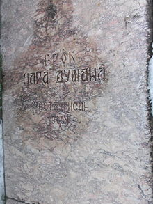

Preminuo je u nedelju 20. decembra 1355. godine.
Sahranjen u svojoj zaduzbini manastiru Svetih arhandjela nedaleko od przrena.
Uzrok srmti nikada nije utvrdjen ali se govorilo o trovanju,mozdanom udaru, groznici pa cak i o epilepsiji.
ni mesto njegove smrti nije utvrdjeno pouzdano.Posle Dusanove smri Srpsko carstvo je postepeno pocelo da se raspada.
